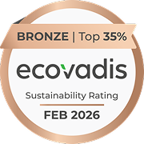

EcoVadis BRONZE MEDAL

하이테코그룹은 지속가능성 평가기관 EcoVadis로부터
상위 35% (Bronze Medal) 등급을 획득하였습니다.
환경, 노동∙인권, 윤리, 지속가능한 조달 분야에서
국제 기준에 부합하는 ESG경영 역량을 인정 받았습니다.
하이테코그룹은 지속가능경영의
새로운 기준을 향해 도약 하겠습니다.
새로운 기준을 향해 도약 하겠습니다.
Environment
임직원의 건강과 복지 증진 및 “고객 • 직원 • 사회로
부터 사랑 받는 기업” 이라는 미션을 바탕으로
환경 보존 및 근로자 개개인의 건강과 안전 확보가
기업 활동의 기초임을 깊이 인식하고
회사의 모든 경영 활동에 환경안전보건 경영
방침이념을 적용 시켜 준수하고자 합니다.
Social
기업문화 개선과 사회공헌 활동의 확대 • 인재 성장
시스템 구축 및 활성화를 위해
학교 및 복지재단에 매출액의 일부를 기부하고
사회 캠페인 활동 등을 다양하게 진행하고 있습니다.
인재 양성과 사회 환원을 위해 앞으로도
끊임 없이 노력하겠습니다.
Governance
회사와 임직원 상호간의 신뢰와 사회적 책임을
다 하는 기업이라는 윤리 의식을 바탕으로,
지속적 성장을 위해 공정하고 투명한 문화 정착이
필수 요건임을 인식하여
윤리헌장을 제정하여 회사의 모든 임직원이 준수해야
할 올바른 행동과 가치 판단의 기준으로 삼고 있습니다.